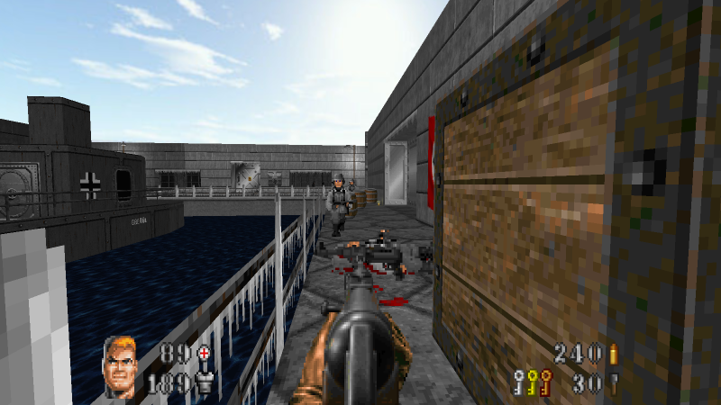
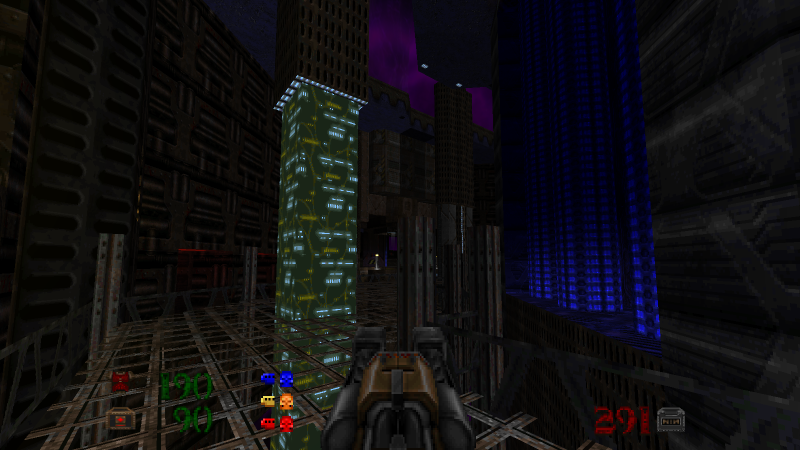
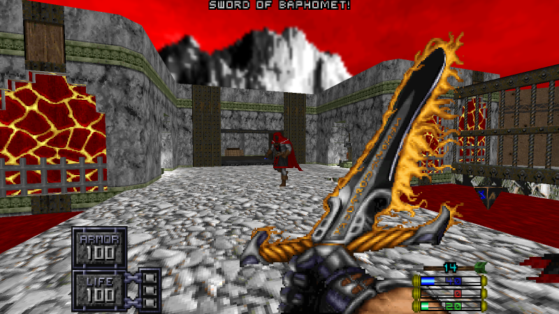
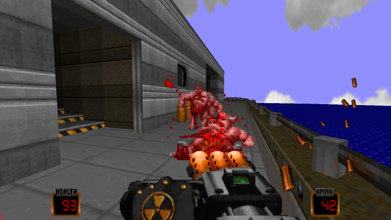
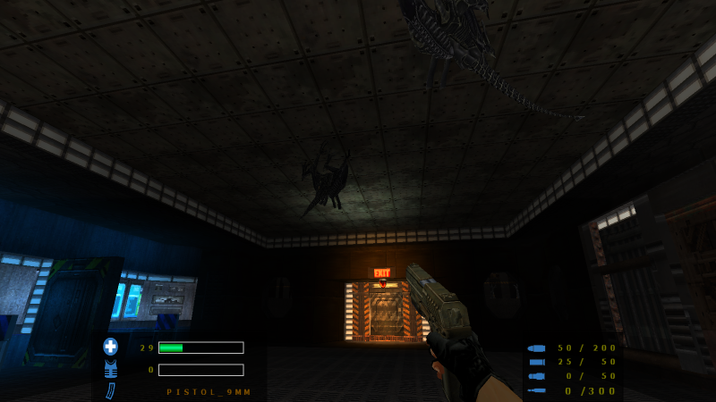
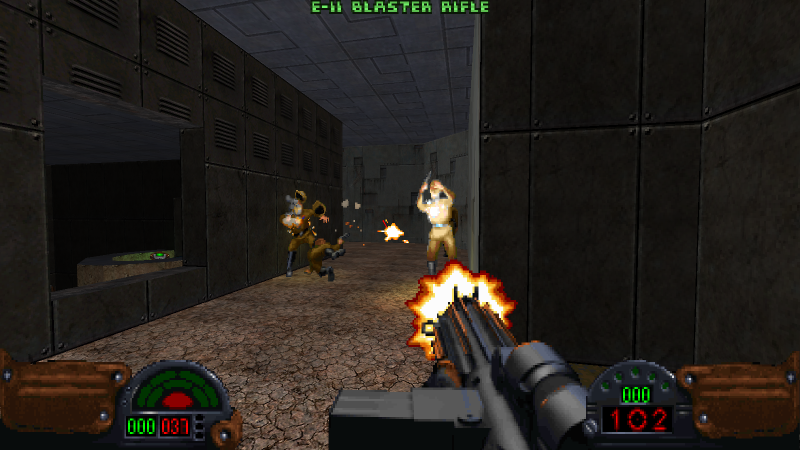

Here are some mods that showcase EDGE-Classic's flexibility and power:Operation: Arctic Wolf RevisitedOperation: Arctic Wolf Revisited is an update/extension of Laz Rojas' classic DOOM 2 mod with improved gameplay, all new weapons, enemies, new mechanics, more interactivity, more immersion, scripting, updated textures, level fixes, etc. making it essentially a whole new game. Download from ModDB here. |
Astral PathfinderAstral Pathfinder by RunSaber/Chutzcraft is an EDGE exclusive partial conversion of Doom II, with an otherworldy setting and Quake-style weaponry. Three vast levels packed with exploring, secret-hunting and of course, hellish spawn from several dimensions, including three boss fights for the player to contend against. Download from ModDB here. |
HeathenA Hexen/Heretic-inspired gameplay mod for Doom. New enemies, weapons, items, and attacks. Download from ModDB here. |
Duke it out in DOOMAn action-packed gameplay mod that puts you in the boots of the political incorrect but lovable ass-kicking macho-man Duke Nukem. Crammed full of of 80's/90's action movie throwbacks and pop culture references. Featuring an impressive arsenal of super deadly, sneaky and devastating weapons and a colorful and humorous collection of power-ups and pickups. Full of witty one-liners from Duke himself and plenty of blood, guts and gore. Download from ModDB here. |
Aliens: StrandedA Total Conversion themed on the Aliens movies. New weapons, enemies, music, textures etc. Heavy use of 3D models. Download from ModDB here. The load order of the included WADs is D3tex.wad, AEM.wad, and AEM_Mapset.wad. |
DarkForces DoomA Star Wars/Dark Forces themed gameplay mod by CeeJay for EDGE-Classic. Weapons, items, enemies and new gameplay mechanics. Download from ModDB here. An optional texture pack to enhance the experience can be found here. |